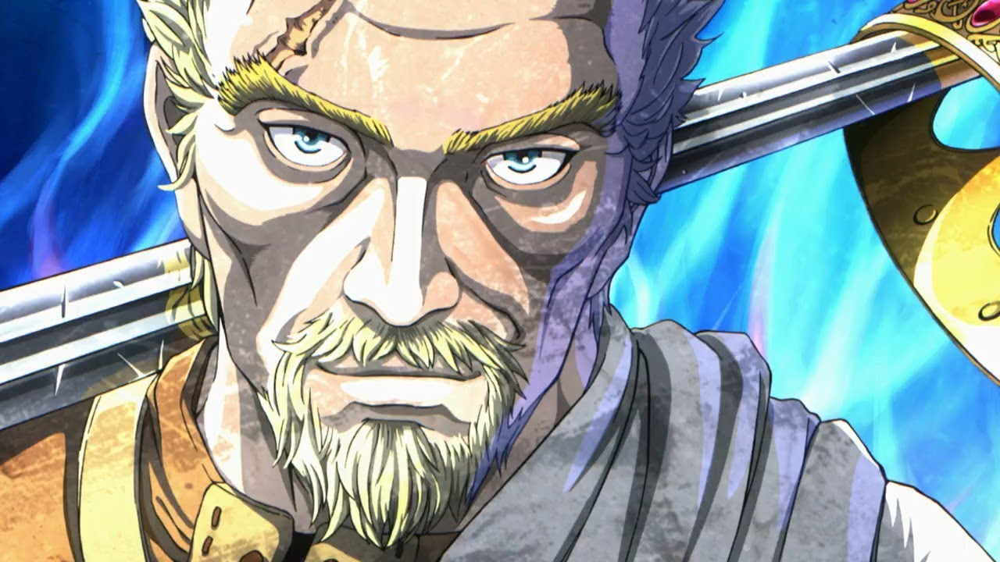
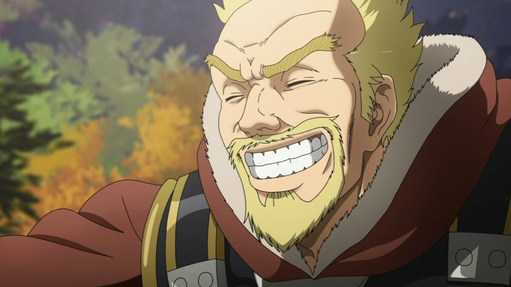
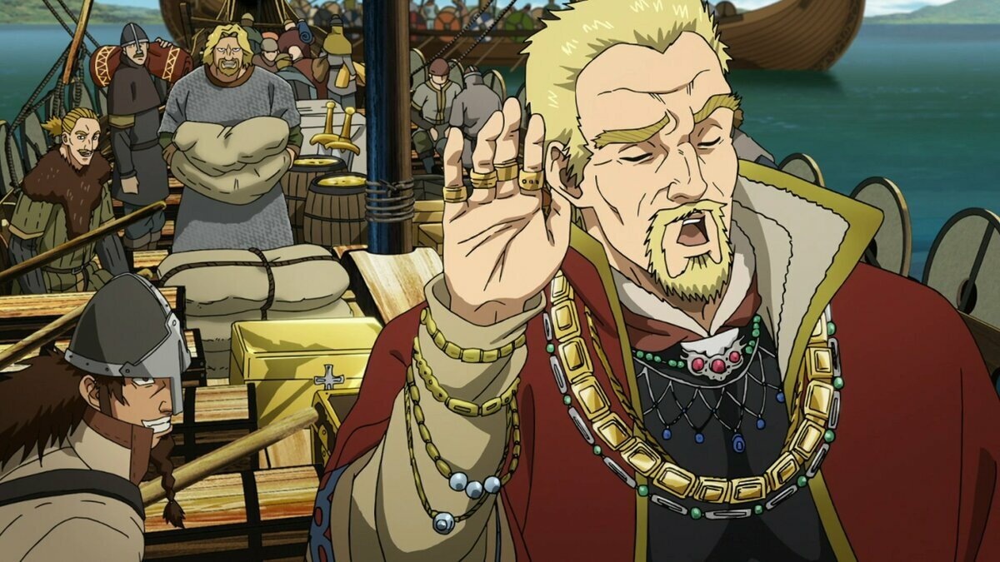

Аскеладд - воин-викинг среднего роста. Он наполовину валлиец и наполовину датчанин, и у него светлые волосы. Обожает своё болото. Хотя Аскеладд всегда стремится показать облик тощего, старого, циничного, легкомысленного человека, неспособного контролировать свои мысли перед лицом вражеских сил, все наоборот. Обычно он обманывает своих людей, притворяясь еще одним викингом, более охотно грабящим, чтобы распределить заслуженные трофеи и показать фасаду, что они могут выиграть любую битву без каких-либо проблем, тем самым демонстрируя свои умелые манипуляции. В сочетании с его харизмой способен заслужить признание, доверие и уважение любого..


